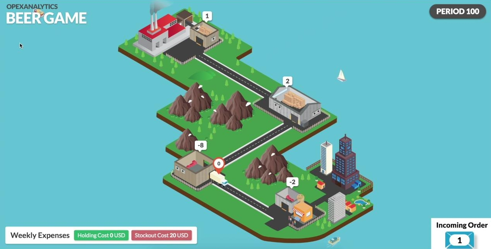
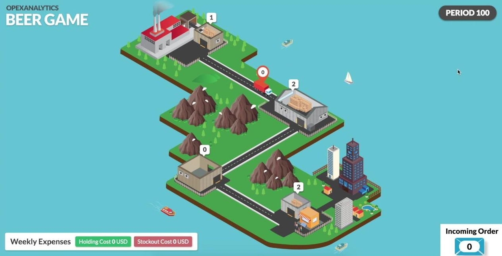

You can find my blog posts here!
Beer Game.
The beer game is a widely used in-class game that is played in supply chain management classes to demonstrate a phenomenon known as the bullwhip effect. consists of a serial supply chain network with four agents---a retailer, a warehouse, a distributor, and a manufacturer.

Customers with stochastic demand come to the retailer, and we assume they wait if the retailer does not have enough inventory; however, the retailer gets the penalty of shortage cost. Same thing happens in other nodes, except the manufacturer node which has an unlimited source of supply.
There are deterministic transportation and information lead times, though the total lead time is stochastic due to stockouts in upstream nodes. Each agent may have nonzero shortage and holding costs. When the game starts agents does not know when the game will finish and in each period they just select an order quantity and submit to their predecessor (supplier). The aim is minimizing long-run cost of the network given the assumption that each agent access only its own local information.
On the other hand, the game is a multi-agent cooperative decentralized partially observed Markov decision process, which are in NEXP complete of problems. So, we cannot solve them in reasonable amount of time. Here, a learning algorithm which provides close to optimal solution algorithm, is provided.
Build the learning model
An adjusted Deep Q-Network (DQN) model is used to solve to this problem. DQN is used to solve single agent games and extended to two agents zero-sum games. However, beer game is a cooperative non-zero-sum game. Using DQN directly results in a game that each agent minimizes its own cost not the whole cost of system. Thus, we cannot use it directly to solve the problem. We propose a feedback scheme to fix this issue and it enforces the agents to learn to minimize the whole cost of system. In this order we update the observed reward of each agent i and period t using:

in which we indeed penalize the agent with the summation of cost of other agents. Therefore, agents learn to minimize the total cost of system instead of just theirself cost.
What does it Learn?
Here we have the result of the case that wholesaler plays DQN, and other play base stock policy. In the following figure you see the result of no training.
After 1000 of training episodes, it has hearnt that there is positive holding cost and it is better to keep its inventory level smaller.

After 2000 of training episodes, it has hearnt that there is no stock-out cost and it is better to keep the inventory its level negative. Also, as you see the whole network is more stable and the inventory levels are closer to zero than previous screenshots.

After 45000 of training episodes, it has hearnt almost the optimal policy, and plays in a way to not only keeps its inventory level and cost close to zero, but also plays in a way to minimize the total cost of the system. Apparently, whole network is more stable and the inventory levels are closer to zero than previous screenshots.

Numerical Results